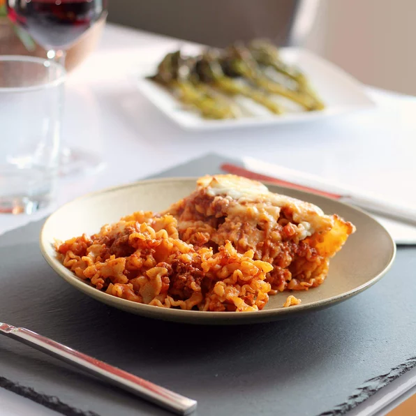

Skillet Lasagna

This no-bake skillet lasagna is made right on your stovetop and is a
fast and easy alternative to store-bought hamburger mixes!
Nothing like a simple and delectable way to approach this Italian-
American staple meal!
Be sure to enjoy with a glass of your red wine of choice!
Ingredients
- 1/2 pound of ground beef
- 28 ounces of red sauce
- 14.5 ounces of diced tomatoes
- 1/2 an onion, chopped
- 1 clove of garlic, minced
- 2 teaspoons of dried basil
- 2 teaspoons of dried oregano
- 1 teaspoon of salt
- 1 teaspoon of black pepper
- 2 cups of malfada noodles
- 1 cup of shredded mozzarella cheese
-
Heat a large skillet over medium-high heat. Cook and stir beef in the
hot skillet until browned and crumbly, 5 to 7 minutes. Drain and discard
grease. Add spaghetti sauce, tomatoes, onion, garlic, basil, oregano,
salt, and pepper. Cook over low heat until sauce is hot, about 15
minutes.
-
Meanwhile, fill a large pot with lightly salted water and bring to a
rolling boil. Cook mafalda noodles at a boil until tender yet firm to
the bite, about 8 minutes. Drain.
-
Add cooked and drained noodles to the sauce and stir until completely
coated. Sprinkle mozzarella cheese on top.
-
Set an oven rack about 6 inches from the heat source and preheat the
oven's broiler.
-
Place skillet under the hot broil and cook until cheese is golden and
bubbly, 3 to 5 minutes.